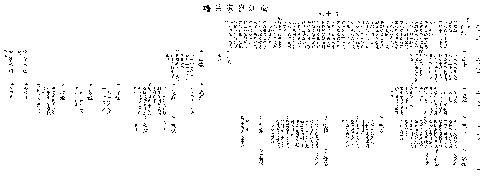

| 곡 강 최 가 계 보 |
| 이전☜ 쪽 49-1 ☞다음 |
| 26세 |
▲ 세윤 世允 |
아버지 ▲재순(再淳)의 셋째 아들 자 성집(聖執) 호 농고(聖執) 1867년(고종 丁卯) 11월 10일생 의병대장 일찍이 문학을 좋아하시고 손(孫)자와 오(吳)자의 글을 즐겨 읽으셨으며, 1896년(丙申) 안동에서 의병을 일으킨 척암(拓庵) 김도화(金道和)공의 진중에서 적들과 싸우다가 대세가 곤란하여 돌아와 은거하며, 학림강당에서 족형 홍식(洪植)을 도와 농수속집(農叟續集)을 간행하였다. 1908년(戊申)에 다시 의성 영천의 의병장 정환직(鄭煥直)과 합세하여 적들과 싸우다가 안타깝게도 적에게 붙들려 1916년(丙辰) 8월 9일 서울 서대문형무소 옥중에서 돌아가셨다. 1968년(戊申) 3월 1일 독립 유공 제407호 건국훈장 국민장을 수훈 1978년 족질 덕은(德殷)께서 농고실기(農皋實紀) 간행 묘 송학 선산에 있었으나 국립묘지 순국선열 묘역 제165호에 이장 안치 할머니 파평윤씨 세노(世老)의 따님 1868년(戊辰)생 8년간 옥중에 계신 할아버지를 사식(私食)과 뒷 바라지를 다하셨으며 , 할아버지가 옥중에서 돌아가시고 천리길을 운구하셔서 선산으로 모셨다. 제삿날 7월 1일 묘 할아버지와 쌍분으로 있다가 국립묘지 순국선열 묘역에 할아버지와 합장. 사위 김녕인 김옥포(金玉包) 외손 철득(哲得) 사위 곡강인 배춘도(裵春道) 외손 백원(百源) |
||||||||||||
| 27세 |
산두 山斗 |
1888년(戊子) 7월 22일생 아버지로 인하여 감옥에 갇혀서 감옥에서 돌아가심 1912년(壬子) 9월 9일 별세 묘 곡강선산 아래 할머니 월성손씨 묘 경주시 강동면 인좌곡 뒷산 |
동수 |
미상 |
산룡 山龍 |
1906년(丙午) 4월 27일생 졸일 미상 할머니 오천정씨 1909년(乙酉)생 졸일 미상 딸 현희(賢姬) 1928년(戊辰) 10월 15일생 딸 수희(秀姬) 1936년(丙子) 5월 3일생 딸 숙희(淑姬) 경인생 마산교육대학 졸업 초등학교 교사 사위 파평인 윤익조(尹益祖) |
||||||||
| 28세 | 계자 무석 武釋 |
생부 산룡(山龍) 일명 재철(在喆) 1933년(癸酉) 4월 8일생 경희대학교 법대 졸업 혜성 에폭시 대표이사 1981년(辛酉) 7월 18일 별세 아내 김순자(金順子) 1935년(乙亥) 11월 3일생 이화여자대학교 교육심리학과 졸업 딸 문선(文善) 계묘생 사위 김해인 김동언(金東彦) 외손 상윤(相潤) |
무석 武釋 |
백부 산두(山斗)의 후계를 이음 |
영직 英直 |
갑신생 외국어대학교 일어과 졸업 건화기업 전무이사 아내 경주최씨 승규(承圭)의 따님 기복(奇福) 무자생 세종대학교 호텔경영학과 졸업 딸 윤선(倫瑄) 정사생 |
||||||||
| 29세 |
준호 畯皓 |
기해생 성균관대학교 불문과 졸업 프랑스빠리3대학 불문학 박사 한국예술종합학교 교수 연극평론가 아내 선산길씨 창덕(昌德)의 따님 혜연(惠姸) 갑진생 성균관대학교 불문과 졸업 빠리10대학원 수료 프랑스 문화원 근무 |
준성 畯盛 |
경자생 홍익대학교 토목과 졸업 연예 매니저먼트 아내 파평윤씨 진옥(眞鈺)의 따님 경운(慶云) 경자생 서울 예전 연극학과 졸업 |
준식 畯植 |
임인생 한양대학교 산업경영학과 졸업 미국 오클라호마 대학 경영학 석사 국제경영개발원 한국 본부장 아내 경주이씨 계호(啓浩)의 따님 은범(殷範) 신축생 서울 간호대 졸업 현대 중앙병원 근무 |
준현 畯現 |
무오생 | ||||||
| 30세 |
서우 瑞佑 |
무진생 |
재우 在佑 |
기사생 |
종우 鍾佑 |
무진생 | ||||||||
| 이전☜ 쪽 49-1 ☞다음 |
|  |